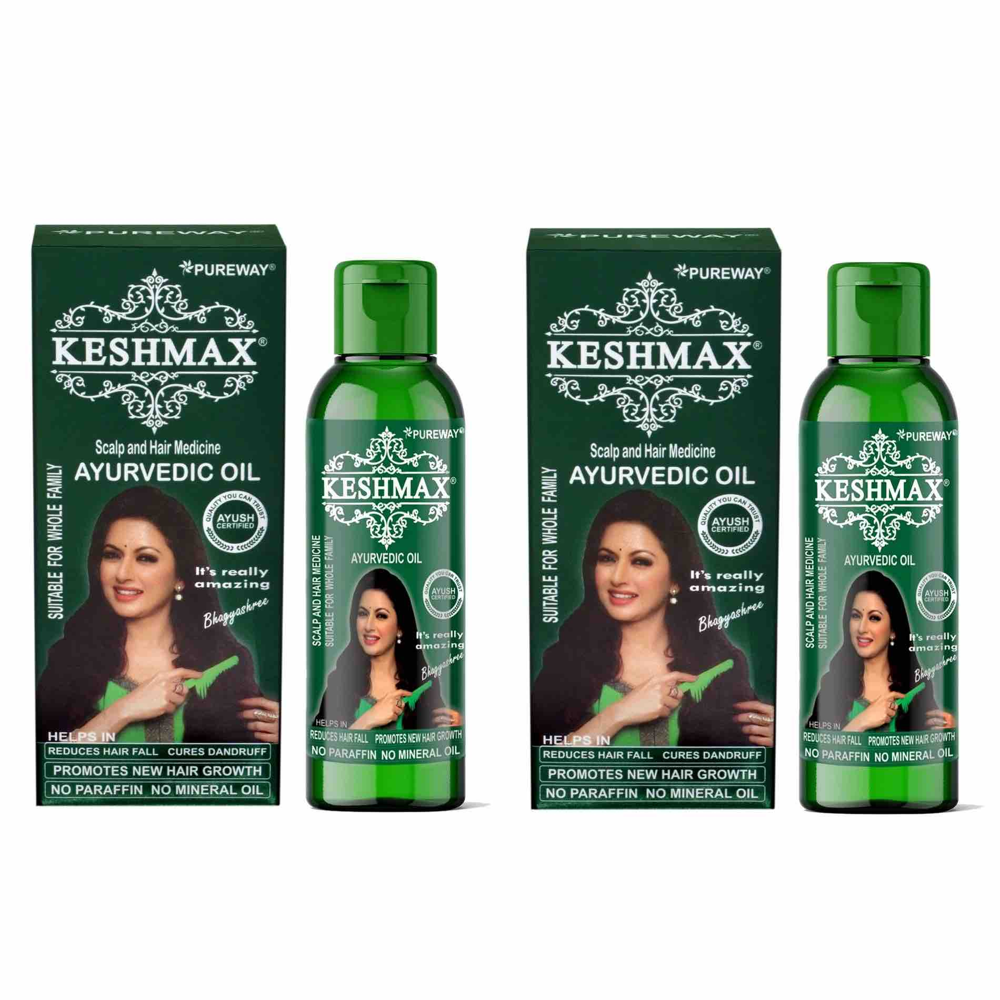

KESHMAX AYURVEDIC HAIR OIL

Ingredients:- Amla, Gudhal Phool, Bhringraj, Mehandi, Brahmi, Neem leaf, Yashti Madhu, Jatamansi, Harar (Big), Bahera, Manjistha, Nagkesar, Til Oil
Product Benefits:- Reduces Hair Fall, Stops Hair Loss, Promotes New Hair Growth, Breakage Control, etc
Ideal for:- Men & Women.
Buy Now

# Hair Type:- All
# Liquid Volume:- 240 ml (Pack of 2)
# Complete Ayurvedic Treatment for Hair Fall and Dandruff. Keshmax Ayurvedic Hair Oil is an Ayurvedic Proprietary medicinal preparation without side effects. Keshmax is a complete Ayurvedic formula, which is prepared as per Charaka Samhita and using 12 precious herbs & prepared without water & paraffin.
Buy Now
Keshmax Ayurvedic Medicinal Oil is for HAIR FALL, DANDRUFF, DRYNESS. It's also helpful in REGROWTH of hair. For Chronic hair problems, regular use of Keshmax Ayurvedic Medicinal Oil. It is advised for at least 2 months. Keshmax Ayurvedic Medicinal Oil has natural Vitamin A, E, C & Magnesium which is approved by ITC Laboratory (Govt. Approved).
Buy Now